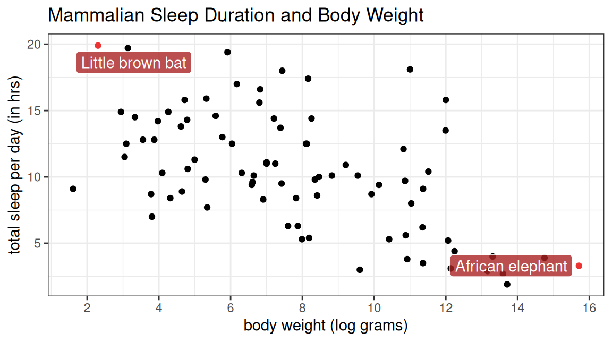
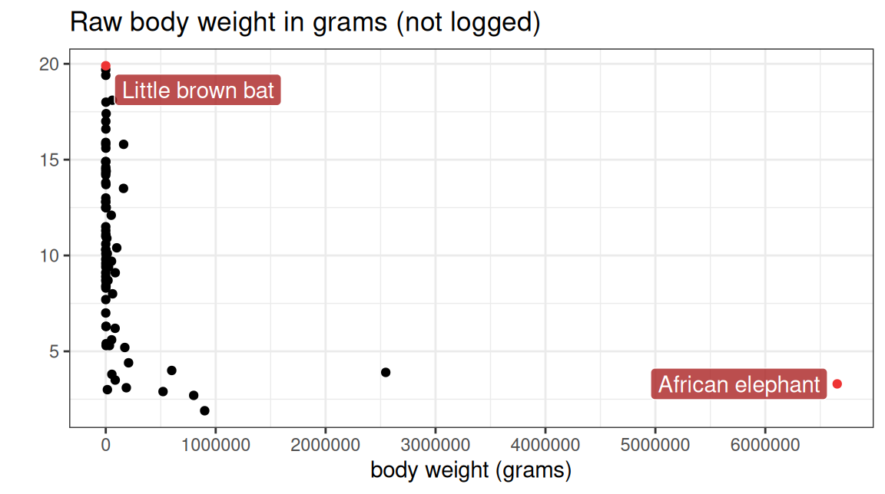
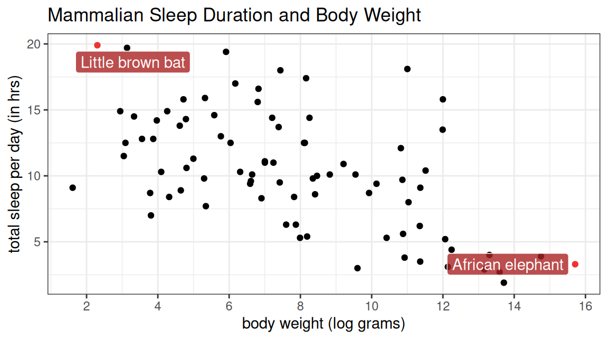
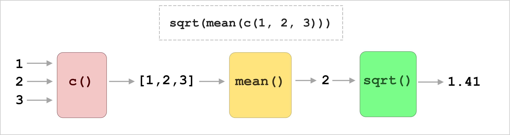
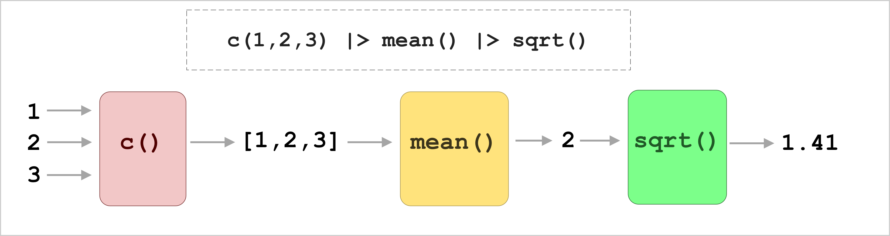
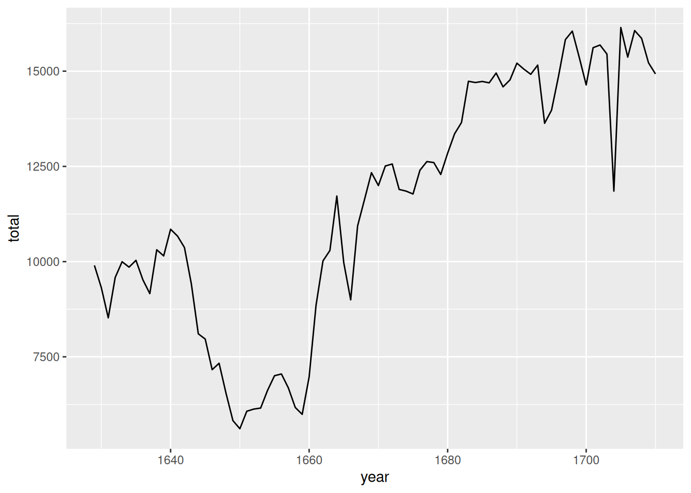

| name | sleep_total | log_bodywt | vore | conservation |
|---|---|---|---|---|
| Cheetah | 12.1 | 10.8 | carni | lc |
| Owl monkey | 17.0 | 6.2 | omni | NA |
| Mountain beaver | 14.4 | 7.2 | herbi | nt |
| Greater short-tailed shrew | 14.9 | 2.9 | omni | lc |
| Cow | 4.0 | 13.3 | herbi | domesticated |
| Three-toed sloth | 14.4 | 8.3 | herbi | NA |
| Northern fur seal | 8.7 | 9.9 | carni | vu |
| Vesper mouse | 7.0 | 3.8 | NA | NA |
| Dog | 10.1 | 9.5 | carni | domesticated |
| Roe deer | 3.0 | 9.6 | herbi | lc |
Data Wrangling
Whipping your data into shape
WarningThis page covers…
- Data Wrangling
- Introduction to functions from the
dplyrpackage (part oftidyverse)filtermutateselectgroup_bysummarize
- Comparison operators:
==,!=,>,<,>=,<=
- The pipe
|>operator
Datasets aren’t always ready to make the plot you need. For many reasons.
Sometimes they need fixing or adjusting before you can even start. A measurement is in inches but you need it in centimeters. Some rows were duplicated by accident. There’s a bunch of columns you don’t need because they aren’t relevant to this task and are cluttering your screen. These “data cleaning” tasks are major step in your work. Not just when data is dirty or broken, but when it’s not yet what you need.
Even then, you often still need to transform again to make some particular plot or table. Maybe you want to make a scatterplot, but only of Adelie penguins. Maybe you have some data on student quiz scores over a semester, and you want to only see everyone’s highest and lowest scores, not all the scores. These things aren’t straightforward to do with our tools so far.
The dplyr package, which comes along with tidyverse, offers many reshaping tools to serve this purpose. We’ll talk about its core functions (like filter and mutate), but also how to tell them what you want (using things like “comparison operators”). Along the way, we’ll begin using a new, very important piece of syntax: the pipe operator |>.
This is data wrangling.
Sleeping like a baby (orangutan)
How much do different kinds of animals sleep? Why? Today’s dataset, msleep, has some very interesting answers.
Researchers Van Savage and Geoffrey West studied the fitness value of sleep, in particular why some mammals seem to need more or less of it. They were especially interested in body size and metabolic rate (roughly how active vs lazy they are). They measured a truly wide range of mammals and published their data, which we’ll consider today.
Take a look at the first ten rows of their data below. It’s in a dataframe already available to you: msleep (mammalian sleep).1
Each row is a species of mammal (so this is our “unit of observation”).
Each column is a specific detail we “observe” about that species:
namesleep_total: its average length of sleep each day, in hourslog_bodywt_g: the (natural log of) the species’ average body weight, in gramsvore: its dietary pattern (herbivore, etc)conservation: its conservation status (endangered, etc)
We can visualize the relationship between “sleep amount” and “body weight” in all 83 species using a scatter plot.

The mammals vary from the wee (20-gram) brown bat, slumbering for nearly 20 hours a day, to the massive (7,000-kilogram) African elephant, nodding off for less than five. That is quite a range! Lets drill down to smaller subsets of this data frame to gain a more nuanced sense of what is going on.
NoteWhy do we use the log of body weight? (Optional)
Below is the regular, un-logged plot of body weight and sleep duration:

See a problem?
Mammals are a diverse bunch. They have an enormous range of body sizes; tiny mice weighing 10 grams, and elephants weighing 7,000,000 grams. Most mammals are quite small, much closer to the 10-gram end of our range, so we end up with a useless plot that has mostly dots stacked up the y-axis.
In the plot above, mammal body sizes appear to be wildly asymmetrically distributed (most are closer to 10 than 1000000 grams). But it’s actually a pretty even distribution by order of magnitude. Roughly \(10^1\) to \(10^7\) (six orders apart, in base 10). Sleep durations don’t have this feature. They are roughly evenly distributed in the 2-20 range. As a result, the sleep durations fit just fine on a standard plot (they’re nicely spread out on the y-axis), but body weights do not (all the points look glued to the left side of the plot).
Taking the log fixes this problem. At their core, logarithms the very question, “what order of magnitude is this number?”
- After \(log_{10}\), the numbers 1, 10, 100, and 1000 become their magnitudes: 0, 1, 2, and 3.
- After \(log_e\), the numbers 1, \(e\), \(e^2\), and \(e^3\) become their magnitudes: 0, 1, 2, and 3.
Once you log the body weights, you see that they’re pretty evenly spread out across those orders of magnitude. On the logged plot, 10 and 100 grams (\(10^1\) and \(10^2\)) look exactly as far apart as 100 and 1000 grams (\(10^2\) and \(10^3\)). And there are similar numbers of mammals in those bands. With this transformation,we can comfortably see 10-gram, 1000-gram, and 1-million-gram animals all on the same plot. Look at the natural log plot again:

Math note: It doesn’t actually matter here if you take the natural log, the log base 10, or the log base 2. It still fixes the scaling problem: the x-axis numbers will just change. The plots below will demonstrate. The left plot is the same as the natural log plot above (log() in R). The second uses the log base 10 of body weight (log10() in R). There is only one difference in the resulting plots: the numbers on the x-axis are all about twice as big on the left. Because you have to raise \(e\) to roughly the 2nd power to get to 10.
By convention, scientists use log base \(e\) in most situations. There are good reasons for this, but the downside is that the x-axis labels become hard to interpret. The ‘5’ on such a plot means \(e^5\), but nobody can quickly calculate what actual number that is. As a result, in this course, you probably should use log10() when you are given a choice. Everything is just easier to interpret. A ‘5’ on the axis means \(10^5\) which is 100,000. Easy enough. But you should be aware that natural log is generally the implied logarithm when a base isn’t specified, across most sciences.
Filtering
In the plots above, it sort of looks like bigger animals sleep less, though it’s a blurry relationship. What else might be happening?
One way to start exploring is to “drill down” on a subset of the data. Maybe just carnivores. Maybe just small animals. Maybe just endangered species.
The filter function is our tool to extract a subset of rows from a dataset. filter is a function that takes at least two arguments: a dataset, and a condition that has to be met for the row to be kept. For example, to get all the carnivores, we could do:
filter(msleep, vore == "carni")| name | genus | vore | order | conservation | sleep_total | sleep_rem | sleep_cycle | awake | brainwt | bodywt | callout | bodywt_g | log_bodywt | log_bodywt_g | log10_bodywt | log10_bodywt_g |
|---|---|---|---|---|---|---|---|---|---|---|---|---|---|---|---|---|
| Cheetah | Acinonyx | carni | Carnivora | lc | 12.1 | NA | NA | 11.90 | NA | 50.000 | FALSE | 50000 | 3.9120230 | 10.819778 | 1.6989700 | 4.698970 |
| Northern fur seal | Callorhinus | carni | Carnivora | vu | 8.7 | 1.4 | 0.3833333 | 15.30 | NA | 20.490 | FALSE | 20490 | 3.0199370 | 9.927692 | 1.3115420 | 4.311542 |
| Dog | Canis | carni | Carnivora | domesticated | 10.1 | 2.9 | 0.3333333 | 13.90 | 0.0700 | 14.000 | FALSE | 14000 | 2.6390573 | 9.546813 | 1.1461280 | 4.146128 |
| Long-nosed armadillo | Dasypus | carni | Cingulata | lc | 17.4 | 3.1 | 0.3833333 | 6.60 | 0.0108 | 3.500 | FALSE | 3500 | 1.2527630 | 8.160518 | 0.5440680 | 3.544068 |
| Domestic cat | Felis | carni | Carnivora | domesticated | 12.5 | 3.2 | 0.4166667 | 11.50 | 0.0256 | 3.300 | FALSE | 3300 | 1.1939225 | 8.101678 | 0.5185139 | 3.518514 |
| Pilot whale | Globicephalus | carni | Cetacea | cd | 2.7 | 0.1 | NA | 21.35 | NA | 800.000 | FALSE | 800000 | 6.6846117 | 13.592367 | 2.9030900 | 5.903090 |
| Gray seal | Haliochoerus | carni | Carnivora | lc | 6.2 | 1.5 | NA | 17.80 | 0.3250 | 85.000 | FALSE | 85000 | 4.4426513 | 11.350407 | 1.9294189 | 4.929419 |
| Thick-tailed opposum | Lutreolina | carni | Didelphimorphia | lc | 19.4 | 6.6 | NA | 4.60 | NA | 0.370 | FALSE | 370 | -0.9942523 | 5.913503 | -0.4317983 | 2.568202 |
| Slow loris | Nyctibeus | carni | Primates | NA | 11.0 | NA | NA | 13.00 | 0.0125 | 1.400 | FALSE | 1400 | 0.3364722 | 7.244228 | 0.1461280 | 3.146128 |
| Northern grasshopper mouse | Onychomys | carni | Rodentia | lc | 14.5 | NA | NA | 9.50 | NA | 0.028 | FALSE | 28 | -3.5755508 | 3.332205 | -1.5528420 | 1.447158 |
All carnivores. (Don’t worry about the specific syntax yet, we’ll talk about it more below, and give thorough explanations in the tutorial.)
An important note: this code does not change the original msleep dataframe. This confuses new programmers regularly. Instead, this code creates a completely new dataframe, one with only carnivores.
Let’s peek back at msleep to confirm that it is unchanged:
msleep| name | genus | vore | order | conservation | sleep_total | sleep_rem | sleep_cycle | awake | brainwt | bodywt | callout | bodywt_g | log_bodywt | log_bodywt_g | log10_bodywt | log10_bodywt_g |
|---|---|---|---|---|---|---|---|---|---|---|---|---|---|---|---|---|
| Cheetah | Acinonyx | carni | Carnivora | lc | 12.1 | NA | NA | 11.9 | NA | 50.000 | FALSE | 50000 | 3.9120230 | 10.819778 | 1.6989700 | 4.698970 |
| Owl monkey | Aotus | omni | Primates | NA | 17.0 | 1.8 | NA | 7.0 | 0.01550 | 0.480 | FALSE | 480 | -0.7339692 | 6.173786 | -0.3187588 | 2.681241 |
| Mountain beaver | Aplodontia | herbi | Rodentia | nt | 14.4 | 2.4 | NA | 9.6 | NA | 1.350 | FALSE | 1350 | 0.3001046 | 7.207860 | 0.1303338 | 3.130334 |
| Greater short-tailed shrew | Blarina | omni | Soricomorpha | lc | 14.9 | 2.3 | 0.1333333 | 9.1 | 0.00029 | 0.019 | FALSE | 19 | -3.9633163 | 2.944439 | -1.7212464 | 1.278754 |
| Cow | Bos | herbi | Artiodactyla | domesticated | 4.0 | 0.7 | 0.6666667 | 20.0 | 0.42300 | 600.000 | FALSE | 600000 | 6.3969297 | 13.304685 | 2.7781513 | 5.778151 |
| Three-toed sloth | Bradypus | herbi | Pilosa | NA | 14.4 | 2.2 | 0.7666667 | 9.6 | NA | 3.850 | FALSE | 3850 | 1.3480731 | 8.255828 | 0.5854607 | 3.585461 |
| Northern fur seal | Callorhinus | carni | Carnivora | vu | 8.7 | 1.4 | 0.3833333 | 15.3 | NA | 20.490 | FALSE | 20490 | 3.0199370 | 9.927692 | 1.3115420 | 4.311542 |
| Vesper mouse | Calomys | NA | Rodentia | NA | 7.0 | NA | NA | 17.0 | NA | 0.045 | FALSE | 45 | -3.1010928 | 3.806662 | -1.3467875 | 1.653212 |
| Dog | Canis | carni | Carnivora | domesticated | 10.1 | 2.9 | 0.3333333 | 13.9 | 0.07000 | 14.000 | FALSE | 14000 | 2.6390573 | 9.546813 | 1.1461280 | 4.146128 |
| Roe deer | Capreolus | herbi | Artiodactyla | lc | 3.0 | NA | NA | 21.0 | 0.09820 | 14.800 | FALSE | 14800 | 2.6946272 | 9.602382 | 1.1702617 | 4.170262 |
All ’vores are accounted for.
Comparison Operators
Notice anything funny in the code we just used?
filter(msleep, vore == "carni")The code above uses two equals signs together: vore == "carni". Why not just one equals, vore = "carni"?
Important detail: single = vs double ==
Single = and double == do fundamentally different things in R (and most coding languages):
- A single
=is a command. It says “make these things equal.” Some examples:- Variable assignment:
x = 4says “MAKE x equal to 4.” We are setting a variablexto the value 4. (Though we usually do variable assignment with an arrow,x <- 4, it’s also valid to dox = 4). - Named arguments to functions: when we write
mean(numbers, na.rm = TRUE), thena.rm = TRUEpart says “MAKE the na.rm argument equal to TRUE” (recall: this is how we remove missing values (NAs) from a vector before trying to average them).
- Variable assignment:
- A double
==is a question. It asks, “are these things equal?” Some examples:x == 2asks “IS x equal to 2?” The answer will be TRUE or FALSE depending on x’s value.- If you have a vector, using
==will ask the question of every element in the vector.
So when we ran:
filter(msleep, vore == "carni")R went through every row and noted where the condition was true (vore was equal to “carni”). It then gave us a new dataframe with only these rows.
Some simple examples demonstrating = and ==
x = 4
x == 4[1] TRUEThe first line, with a single =, makes x equal to 4. The second line, with the double ==, asks if x is equal to 4. It is, so the output on your screen says TRUE.
numbers = c(1, 2, 3)
numbers == 2[1] FALSE TRUE FALSEThe first line with the single = says “MAKE the numbers variable equal to the vector (1, 2, 3).” (Again, this is equivalent to numbers <- c(1, 2, 3)). The second line with the double == asks, for each element in the vector, “is this number equal to 2?” The output is a logical vector of the answers: FALSE TRUE FALSE. Only the second number in numbers is equal to 2.
More comparison operators
The double == is one of many ways to ask a question about two things. In this case, == asks “are they equal?”. But this is only one of many ways to compare two things. There are many more such “comparison operators”:
| Operator | Translation | Example |
|---|---|---|
== |
equal to? | 4 == 6 returns FALSE |
!= |
_not _equal to? | 4 != 6 returns TRUE |
< |
less than? | 4 < 6 returns TRUE, while 4 < 4 returns FALSE |
<= |
less than or equal to? | 4 <= 6 returns TRUE, and 4 <= 4 also returns TRUE |
> |
greater than? | 4 > 6 returns FALSE |
>= |
greater than or equal to? | 4 >= 6 returns FALSE |
%in% |
asks if the thing on the left is IN the vector on the right | 3 %in% c(1, 3, 5) returns TRUE |
Let’s try some of these out. Let’s filter for only the rows with large animals, defined as those with a log body weight greater than 12.
filter(msleep, log_bodywt_g > 12)# A tibble: 9 × 17
name genus vore order conservation sleep_total sleep_rem sleep_cycle awake
<chr> <chr> <chr> <chr> <chr> <dbl> <dbl> <dbl> <dbl>
1 Cow Bos herbi Arti… domesticated 4 0.7 0.667 20
2 Asian … Elep… herbi Prob… en 3.9 NA NA 20.1
3 Horse Equus herbi Peri… domesticated 2.9 0.6 1 21.1
4 Donkey Equus herbi Peri… domesticated 3.1 0.4 NA 20.9
5 Giraffe Gira… herbi Arti… cd 1.9 0.4 NA 22.1
6 Pilot … Glob… carni Ceta… cd 2.7 0.1 NA 21.4
7 Africa… Loxo… herbi Prob… vu 3.3 NA NA 20.7
8 Brazil… Tapi… herbi Peri… vu 4.4 1 0.9 19.6
9 Bottle… Turs… carni Ceta… <NA> 5.2 NA NA 18.8
# ℹ 8 more variables: brainwt <dbl>, bodywt <dbl>, callout <lgl>,
# bodywt_g <dbl>, log_bodywt <dbl>, log_bodywt_g <dbl>, log10_bodywt <dbl>,
# log10_bodywt_g <dbl>There were 9 such animals. Reading the names confirms that, yes, these are the big ones.
Multiple criteria? Use logical operators to join them.
What if you want to extract only the creatures that are both very large and short-sleeping ? Well, for that, we need to do more than one comparison. We stitch these comparisons together with “logical operators”: & (“and”), | (“or”).
This filter returns the creatures who are large and sleep little.
filter(msleep, log_bodywt_g > 12 & sleep_total < 5)# A tibble: 8 × 17
name genus vore order conservation sleep_total sleep_rem sleep_cycle awake
<chr> <chr> <chr> <chr> <chr> <dbl> <dbl> <dbl> <dbl>
1 Cow Bos herbi Arti… domesticated 4 0.7 0.667 20
2 Asian … Elep… herbi Prob… en 3.9 NA NA 20.1
3 Horse Equus herbi Peri… domesticated 2.9 0.6 1 21.1
4 Donkey Equus herbi Peri… domesticated 3.1 0.4 NA 20.9
5 Giraffe Gira… herbi Arti… cd 1.9 0.4 NA 22.1
6 Pilot … Glob… carni Ceta… cd 2.7 0.1 NA 21.4
7 Africa… Loxo… herbi Prob… vu 3.3 NA NA 20.7
8 Brazil… Tapi… herbi Peri… vu 4.4 1 0.9 19.6
# ℹ 8 more variables: brainwt <dbl>, bodywt <dbl>, callout <lgl>,
# bodywt_g <dbl>, log_bodywt <dbl>, log_bodywt_g <dbl>, log10_bodywt <dbl>,
# log10_bodywt_g <dbl>This can be read as “make me a dataframe with the rows from msleep where the log body weight is greater than 12 and the sleep total is less than 5.” We see that there are 8 such creatures, one fewer than the data frame with only the body weight filter (bottle-nosed dolphins sleep, on average, 5.2 hrs).
This next block of code returns the creatures who are large or sleep little.
filter(msleep, log_bodywt_g > 12 | sleep_total < 5)# A tibble: 12 × 17
name genus vore order conservation sleep_total sleep_rem sleep_cycle awake
<chr> <chr> <chr> <chr> <chr> <dbl> <dbl> <dbl> <dbl>
1 Cow Bos herbi Arti… domesticated 4 0.7 0.667 20
2 Roe d… Capr… herbi Arti… lc 3 NA NA 21
3 Asian… Elep… herbi Prob… en 3.9 NA NA 20.1
4 Horse Equus herbi Peri… domesticated 2.9 0.6 1 21.1
5 Donkey Equus herbi Peri… domesticated 3.1 0.4 NA 20.9
6 Giraf… Gira… herbi Arti… cd 1.9 0.4 NA 22.1
7 Pilot… Glob… carni Ceta… cd 2.7 0.1 NA 21.4
8 Afric… Loxo… herbi Prob… vu 3.3 NA NA 20.7
9 Sheep Ovis herbi Arti… domesticated 3.8 0.6 NA 20.2
10 Caspi… Phoca carni Carn… vu 3.5 0.4 NA 20.5
11 Brazi… Tapi… herbi Peri… vu 4.4 1 0.9 19.6
12 Bottl… Turs… carni Ceta… <NA> 5.2 NA NA 18.8
# ℹ 8 more variables: brainwt <dbl>, bodywt <dbl>, callout <lgl>,
# bodywt_g <dbl>, log_bodywt <dbl>, log_bodywt_g <dbl>, log10_bodywt <dbl>,
# log10_bodywt_g <dbl>We changed & to | to switch from “and” to “or.” These can get arbitrarily complex, using parentheses to group things.
Try to intuit what the following code does:
filter(msleep, vore == "herbi" & (sleep_total < 5 | sleep_total > 15))# A tibble: 12 × 17
name genus vore order conservation sleep_total sleep_rem sleep_cycle awake
<chr> <chr> <chr> <chr> <chr> <dbl> <dbl> <dbl> <dbl>
1 Cow Bos herbi Arti… domesticated 4 0.7 0.667 20
2 Roe d… Capr… herbi Arti… lc 3 NA NA 21
3 Asian… Elep… herbi Prob… en 3.9 NA NA 20.1
4 Horse Equus herbi Peri… domesticated 2.9 0.6 1 21.1
5 Donkey Equus herbi Peri… domesticated 3.1 0.4 NA 20.9
6 Giraf… Gira… herbi Arti… cd 1.9 0.4 NA 22.1
7 Afric… Loxo… herbi Prob… vu 3.3 NA NA 20.7
8 Sheep Ovis herbi Arti… domesticated 3.8 0.6 NA 20.2
9 Arcti… Sper… herbi Rode… lc 16.6 NA NA 7.4
10 Golde… Sper… herbi Rode… lc 15.9 3 NA 8.1
11 Easte… Tami… herbi Rode… <NA> 15.8 NA NA 8.2
12 Brazi… Tapi… herbi Peri… vu 4.4 1 0.9 19.6
# ℹ 8 more variables: brainwt <dbl>, bodywt <dbl>, callout <lgl>,
# bodywt_g <dbl>, log_bodywt <dbl>, log_bodywt_g <dbl>, log10_bodywt <dbl>,
# log10_bodywt_g <dbl>This looks for rows where the animal is an herbivore (vore = "herbi") and it either sleeps very little or a whole lot ((sleep_total < 5 | sleep_total > 15)). There are 12 such animals.
When working with nominal categorical variables, the only operator that you’ll be using are == and !=. You can return a union like normal using |,
filter(msleep, name == "Little brown bat" | name == "African elephant")# A tibble: 2 × 17
name genus vore order conservation sleep_total sleep_rem sleep_cycle awake
<chr> <chr> <chr> <chr> <chr> <dbl> <dbl> <dbl> <dbl>
1 Africa… Loxo… herbi Prob… vu 3.3 NA NA 20.7
2 Little… Myot… inse… Chir… <NA> 19.9 2 0.2 4.1
# ℹ 8 more variables: brainwt <dbl>, bodywt <dbl>, callout <lgl>,
# bodywt_g <dbl>, log_bodywt <dbl>, log_bodywt_g <dbl>, log10_bodywt <dbl>,
# log10_bodywt_g <dbl>Translation: Only the brown bat and african elephant.
filter(msleep, name != "Little brown bat" | name == "African elephant")# A tibble: 82 × 17
name genus vore order conservation sleep_total sleep_rem sleep_cycle awake
<chr> <chr> <chr> <chr> <chr> <dbl> <dbl> <dbl> <dbl>
1 Cheet… Acin… carni Carn… lc 12.1 NA NA 11.9
2 Owl m… Aotus omni Prim… <NA> 17 1.8 NA 7
3 Mount… Aplo… herbi Rode… nt 14.4 2.4 NA 9.6
4 Great… Blar… omni Sori… lc 14.9 2.3 0.133 9.1
5 Cow Bos herbi Arti… domesticated 4 0.7 0.667 20
6 Three… Brad… herbi Pilo… <NA> 14.4 2.2 0.767 9.6
7 North… Call… carni Carn… vu 8.7 1.4 0.383 15.3
8 Vespe… Calo… <NA> Rode… <NA> 7 NA NA 17
9 Dog Canis carni Carn… domesticated 10.1 2.9 0.333 13.9
10 Roe d… Capr… herbi Arti… lc 3 NA NA 21
# ℹ 72 more rows
# ℹ 8 more variables: brainwt <dbl>, bodywt <dbl>, callout <lgl>,
# bodywt_g <dbl>, log_bodywt <dbl>, log_bodywt_g <dbl>, log10_bodywt <dbl>,
# log10_bodywt_g <dbl>Translation: Everything but the brown bat and the elephant.
Or you can save some typing (and craft more readable code) by using %in% instead:
filter(msleep, name %in% c("Little brown bat", "African elephant"))# A tibble: 2 × 17
name genus vore order conservation sleep_total sleep_rem sleep_cycle awake
<chr> <chr> <chr> <chr> <chr> <dbl> <dbl> <dbl> <dbl>
1 Africa… Loxo… herbi Prob… vu 3.3 NA NA 20.7
2 Little… Myot… inse… Chir… <NA> 19.9 2 0.2 4.1
# ℹ 8 more variables: brainwt <dbl>, bodywt <dbl>, callout <lgl>,
# bodywt_g <dbl>, log_bodywt <dbl>, log_bodywt_g <dbl>, log10_bodywt <dbl>,
# log10_bodywt_g <dbl>select
Sometimes you have a bunch of columns that you don’t need for your analysis, so it’s easier to pluck out the ones you actually need to use.
select makes a new dataframe with only certain columns of the original dataset.
For example:
select(msleep, name, log_bodywt, sleep_total)select is a function that expects 1) a dataset, and 2) one or more column names to keep. The code above says, “Please give me a new dataset with only the name, log_bodywt, and sleep_total columns from msleep”.
Again, this does not change the original msleep dataframe. If you wanted to replace msleep with this new, smaller dataset, you would have to assign it back to msleep:
msleep <- select(msleep, name, log_bodywt, sleep_total)You can also use - to say “I don’t want this column.” For example, to get a copy of msleep without the conservation and vore columns, you could do:
select(msleep, -conservation, -vore)This is common at the top of analysis files. You take some big dataset, throw out what you don’t need to simplify things, then get to work.
NoteA trick to remembering select vs filter
One way to remember which is which between filter and select is that filte**r** and row have an “r” in them, while sele**c**t and column both have a “c”. So filte**r** is for rows, sele**c**t is for columns.
mutate
To add a new column, or to alter an existing column, we use mutate.
mutate is a function that takes two arguments: a dataframe, and instructions on what column to make or change.
For example, let’s add a new column to our msleep dataset, sleep_total_minutes, which is the animal’s total sleep per day in minutes instead of hours:
mutate(msleep, sleep_total_minutes = sleep_total * 60)| name | genus | vore | order | conservation | sleep_total | sleep_rem | sleep_cycle | awake | brainwt | bodywt | callout | bodywt_g | log_bodywt | log_bodywt_g | log10_bodywt | log10_bodywt_g | sleep_total_minutes |
|---|---|---|---|---|---|---|---|---|---|---|---|---|---|---|---|---|---|
| Cheetah | Acinonyx | carni | Carnivora | lc | 12.1 | NA | NA | 11.9 | NA | 50.000 | FALSE | 50000 | 3.9120230 | 10.819778 | 1.6989700 | 4.698970 | 726 |
| Owl monkey | Aotus | omni | Primates | NA | 17.0 | 1.8 | NA | 7.0 | 0.01550 | 0.480 | FALSE | 480 | -0.7339692 | 6.173786 | -0.3187588 | 2.681241 | 1020 |
| Mountain beaver | Aplodontia | herbi | Rodentia | nt | 14.4 | 2.4 | NA | 9.6 | NA | 1.350 | FALSE | 1350 | 0.3001046 | 7.207860 | 0.1303338 | 3.130334 | 864 |
| Greater short-tailed shrew | Blarina | omni | Soricomorpha | lc | 14.9 | 2.3 | 0.1333333 | 9.1 | 0.00029 | 0.019 | FALSE | 19 | -3.9633163 | 2.944439 | -1.7212464 | 1.278754 | 894 |
| Cow | Bos | herbi | Artiodactyla | domesticated | 4.0 | 0.7 | 0.6666667 | 20.0 | 0.42300 | 600.000 | FALSE | 600000 | 6.3969297 | 13.304685 | 2.7781513 | 5.778151 | 240 |
| Three-toed sloth | Bradypus | herbi | Pilosa | NA | 14.4 | 2.2 | 0.7666667 | 9.6 | NA | 3.850 | FALSE | 3850 | 1.3480731 | 8.255828 | 0.5854607 | 3.585461 | 864 |
| Northern fur seal | Callorhinus | carni | Carnivora | vu | 8.7 | 1.4 | 0.3833333 | 15.3 | NA | 20.490 | FALSE | 20490 | 3.0199370 | 9.927692 | 1.3115420 | 4.311542 | 522 |
| Vesper mouse | Calomys | NA | Rodentia | NA | 7.0 | NA | NA | 17.0 | NA | 0.045 | FALSE | 45 | -3.1010928 | 3.806662 | -1.3467875 | 1.653212 | 420 |
| Dog | Canis | carni | Carnivora | domesticated | 10.1 | 2.9 | 0.3333333 | 13.9 | 0.07000 | 14.000 | FALSE | 14000 | 2.6390573 | 9.546813 | 1.1461280 | 4.146128 | 606 |
| Roe deer | Capreolus | herbi | Artiodactyla | lc | 3.0 | NA | NA | 21.0 | 0.09820 | 14.800 | FALSE | 14800 | 2.6946272 | 9.602382 | 1.1702617 | 4.170262 | 180 |
Again, this has not changed msleep! We made a whole new dataframe. If we wanted to change msleep itself, we would have to assign this new dataframe back to msleep:
msleep <-mutate(msleep, sleep_total_minutes = sleep_total * 60)This is common practice when you actually want to modify your main dataframe – not just see what a different version might look like.
group_by
You’ve seen group_by before. It’s a function that takes at least two arguments: a dataframe and a column name. All group_by does is quietly make note of which rows belong to which groups. This does nothing on its own, but many functions like summarize will behave differently on a grouped vs ungrouped data frame. Consider the following two code blocks:
summarize(penguins, mean_bill_length = mean(bill_length_mm, na.rm = TRUE))# A tibble: 1 × 1
mean_bill_length
<dbl>
1 44.0summarize(group_by(penguins, species), mean_bill_length = mean(bill_length_mm, na.rm = TRUE))# A tibble: 3 × 2
species mean_bill_length
<fct> <dbl>
1 Adelie 38.8
2 Chinstrap 48.8
3 Gentoo 47.6The Almighty “Pipe”
When you chain together a bunch of functions in R, it can get messy. Consider:
sqrt(mean(c(1, 2, 3)))You have to stare at this for a minute to see what it’s doing. As we discussed, nested functions like this (c within mean within sqrt) are evaluated from the inside out. In diagram form, this is what’s happening:

The diagram is a lot more intuitive. Data flows from left to right through a series of transformations. Wouldn’t it be nice if we could write our code more like this?
This is where the pipe operator |> comes in. (It’s composed of a vertical line (shift + backslash on most keyboards) followed by a greater than sign.)
Before we explain further, here’s the punchline: using the pipe, you can rewrite the line of code above as c(1, 2, 3) |> mean() |> sqrt().
First, notice how naturally this reads. We make a vector with some numbers, then compute their mean, then take the square root.
Especially in making plots or filtering/cleaning data, you often call a lot of functions in a row on the same dataset. First you filter out some rows, then you mutate to add a column, then maybe you do a group_by and summarize. Doing it all at once is a mess:
summarize(group_by(mutate(filter(msleep, log_bodywt > 12),
sleep_per_weight = sleep_total / log_bodywt),
vore),
mean_sleep = mean(sleep_per_weight))The pipe |> operator saves us. Literally all the pipe does is this: whatever is on the left side of the pipe is passed as the first argument to the function on the right side. The right side is always a function call.
This is why we can rewrite sqrt(mean(c(1, 2, 3))) as c(1, 2, 3) |> mean() |> sqrt(). This code is functionally exactly the same.

Let’s walk through the code itself, left to right, First, we see c(1, 2, 3) |> mean(). The stuff to the left of the pipe, c(1, 2, 3), is moved into the function on the right (mean). The result is that it runs mean(c(1, 2, 3)).
Then there’s another pipe. So what’s now on the left, mean(c(1, 2, 3)), is moved into the function on the right, sqrt, to give us sqrt(mean(c(1, 2, 3))).
Here’s a quick animation to give you the idea if it’s still confusing:
Now let’s rewrite this gnarly code with pipes:
summarize(group_by(mutate(filter(msleep, log_bodywt > 12),
sleep_per_weight = sleep_total / log_bodywt),
vore),
mean_sleep = mean(sleep_per_weight))With pipes, it becomes:
msleep |>
filter(log_bodywt > 12) |>
mutate(sleep_per_weight = sleep_total / log_bodywt) |>
group_by(vore) |>
summarize(mean_sleep = mean(sleep_per_weight))Much better. Same result, much easier to read. We start with the msleep data frame, then filter some rows, then mutate to make a new column, then group by something, and finally summarize those groups. The data flows in a natural reading order through a series of transformations.
The code above is a very common kind of thing we do in data science. We alter a dataset through a series of steps, then end with in a summary table or maybe a plot. The pipe, as you saw above, makes these things far more legible.
Let’s look at another example:
What proportion of carnivores sleep more than 8 hours per night?
Answering this requires two steps: filter()ing to focus on carnivores and summarize()ing with a proportion that meet a condition (recall that a comparison results in a logical vector of 0s and 1s). It is often a good idea to record the number of observations that go into a summary statistic, which we do here with the special summary function n().
msleep |>
filter(vore == "carni") |>
summarize(prop_over_8hrs = mean(sleep_total > 8),
n = n())# A tibble: 1 × 2
prop_over_8hrs n
<dbl> <int>
1 0.684 19What year had the greatest total number of christenings?
The original arbuthnot data frame, which captures birth records in 17th century London, in fact records the numbers of boys and girls names that appear in church christening records. To find the year with the greatest total number of christenings requires first the creation of a new column with mutate(), then arrange()ing the rows of that data frame, then select()ing just the rows of interest. As one pipeline, that is:
library(stat20data)
arbuthnot |>
mutate(total = boys + girls) |>
arrange(desc(total)) |>
select(year, total)# A tibble: 82 × 2
year total
<int> <int>
1 1705 16145
2 1707 16066
3 1698 16052
4 1708 15862
5 1697 15829
6 1702 15687
7 1701 15616
8 1703 15448
9 1706 15369
10 1699 15363
# ℹ 72 more rowsWhat is the trend in the total number of christenings over time?
arbuthnot |>
mutate(total = boys + girls) |>
ggplot(aes(x = year, y = total)) +
geom_line()
This demonstrates that you can pipe a data frame directly into a ggplot - the first argument is a data frame after all! The main thing to note is that when moving into a ggplot, the layers are added with the + operator instead of the pipe, |>.
Groupwise Operations Revisited…
The last example above demonstrates a very common scenario: you want to perform some calculations on one particular group of observations in your data set. But what if you want to do that same calculation for every group?
The vore variable has four levels: carni, herbi, insecti, and omni. It would not be too difficult to copy and paste the above pipeline four times and modify each filter function to focus on a different group. But what if there were a dozen different levels?
This task - performing an operation on all groups of a data set one-by-one - is such a common data science task that nearly every software tool has a good solution. In the tidyverse, the solution is the group_by() function. Let’s see it in action.
msleep |>
group_by(vore) |>
summarize(p_gt_8hrs = mean(sleep_total > 8),
n = n())# A tibble: 5 × 3
vore p_gt_8hrs n
<chr> <dbl> <int>
1 carni 0.684 19
2 herbi 0.594 32
3 insecti 1 5
4 omni 0.95 20
5 <NA> 0.714 7Like most tidyverse functions, the first argument to group_by() is a data frame, so it can be slotted directly into the pipeline. The second argument, the one that shows up in the code above, is the name of the variable that you want to use to delineate the groups. This is generally a factor, character, or logical vector.
group_by() is an incredibly powerful function because it changes the behavior of downstream functions. Lets break our pipeline and inspect the data frame that comes out of it.
msleep |>
group_by(vore)# A tibble: 83 × 17
# Groups: vore [5]
name genus vore order conservation sleep_total sleep_rem sleep_cycle awake
<chr> <chr> <chr> <chr> <chr> <dbl> <dbl> <dbl> <dbl>
1 Cheet… Acin… carni Carn… lc 12.1 NA NA 11.9
2 Owl m… Aotus omni Prim… <NA> 17 1.8 NA 7
3 Mount… Aplo… herbi Rode… nt 14.4 2.4 NA 9.6
4 Great… Blar… omni Sori… lc 14.9 2.3 0.133 9.1
5 Cow Bos herbi Arti… domesticated 4 0.7 0.667 20
6 Three… Brad… herbi Pilo… <NA> 14.4 2.2 0.767 9.6
7 North… Call… carni Carn… vu 8.7 1.4 0.383 15.3
8 Vespe… Calo… <NA> Rode… <NA> 7 NA NA 17
9 Dog Canis carni Carn… domesticated 10.1 2.9 0.333 13.9
10 Roe d… Capr… herbi Arti… lc 3 NA NA 21
# ℹ 73 more rows
# ℹ 8 more variables: brainwt <dbl>, bodywt <dbl>, callout <lgl>,
# bodywt_g <dbl>, log_bodywt <dbl>, log_bodywt_g <dbl>, log10_bodywt <dbl>,
# log10_bodywt_g <dbl>This looks . . . exactly like the original data frame.
Well, not exactly like it: there is now a note at the top that the data frame now has the notion of groups based on vore. In effect, group_by() has taken the generic data frame and turned it into the one in the middle below: the same data frame but with rows now flagged as belonging to one group or another. When we pipe this grouped data frame into summarize(), summarize() collapses that data frame down into a single row for each group and creates a new column for each new summary statistic.

Summary
There are several ways to subset a data frame but the most important for data analysis is filtering: subsetting the rows according to a condition. In R, that condition is framed in terms of a comparison between a variable and a value (or set of values). Comparisons take many forms and can be combined using logical operators. The result is a logical vector that can be used for filtering or computing summary statistics. You can perform simultaneous analyses on multiple subsets by doing groupwise operations with group_by().
As we begin to do analyses that require multiple operations, the pipe operator, |>, can be used to stitch the functions together into a single pipeline.
If you’re thinking, 😬 , yikes there was a lot of coding in these notes, you’re right. Keep reading, you’ll have an opportunity for some practice in the tutorial.
Footnotes
V. M. Savage and G. B. West. A quantitative, theoretical framework for understanding mammalian sleep. Proceedings of the National Academy of Sciences, 104 (3):1051-1056, 2007.↩︎